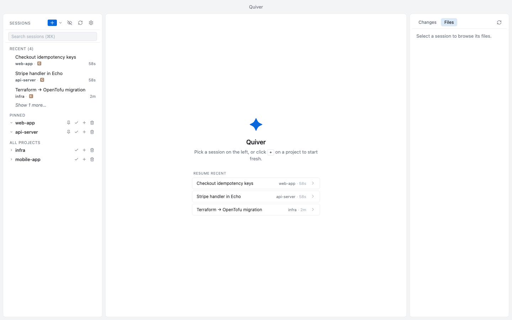
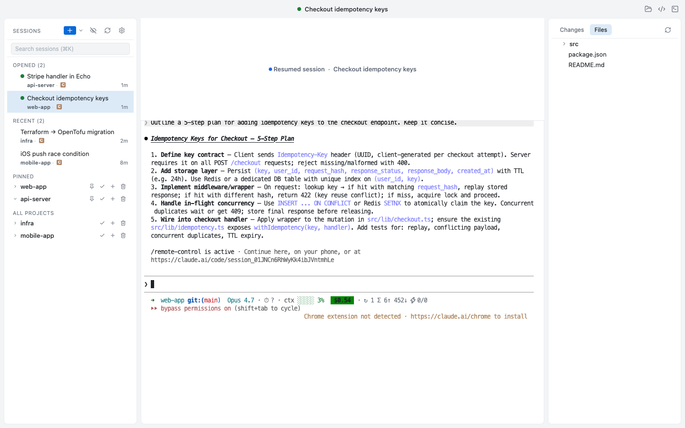
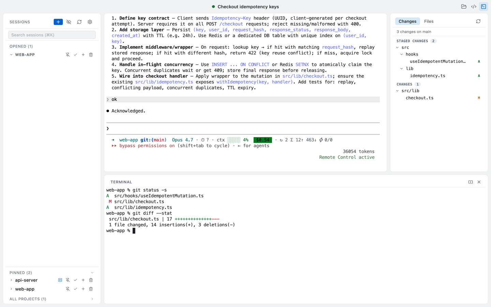
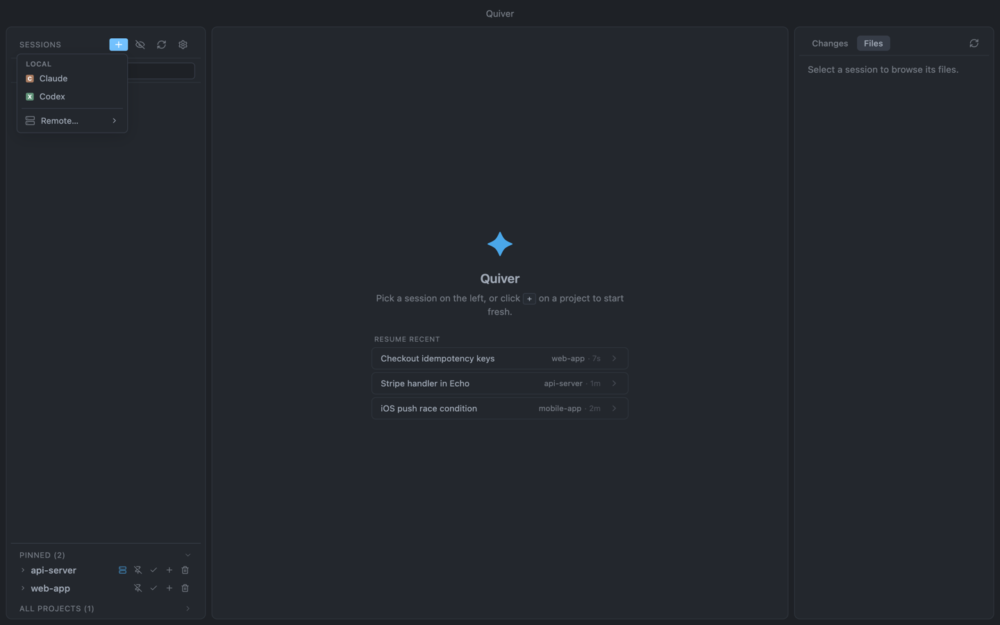
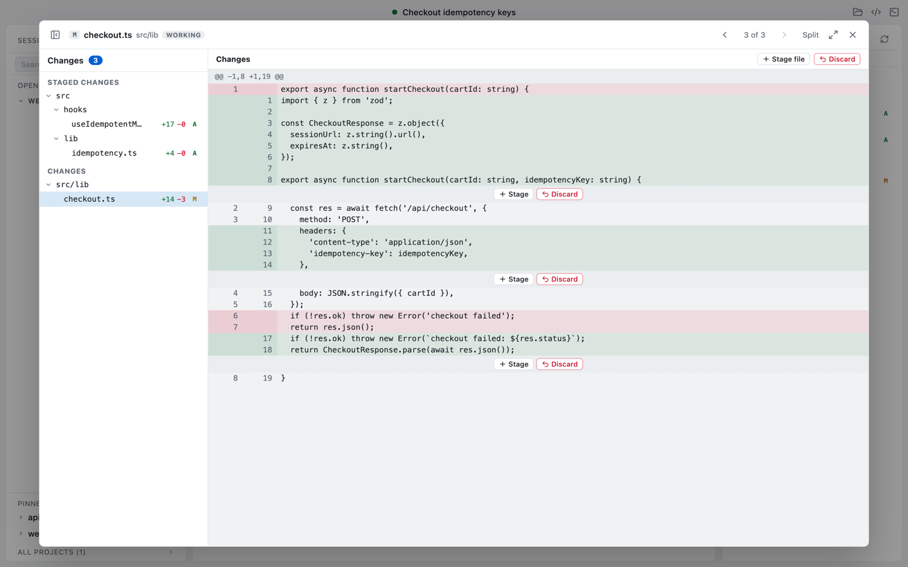
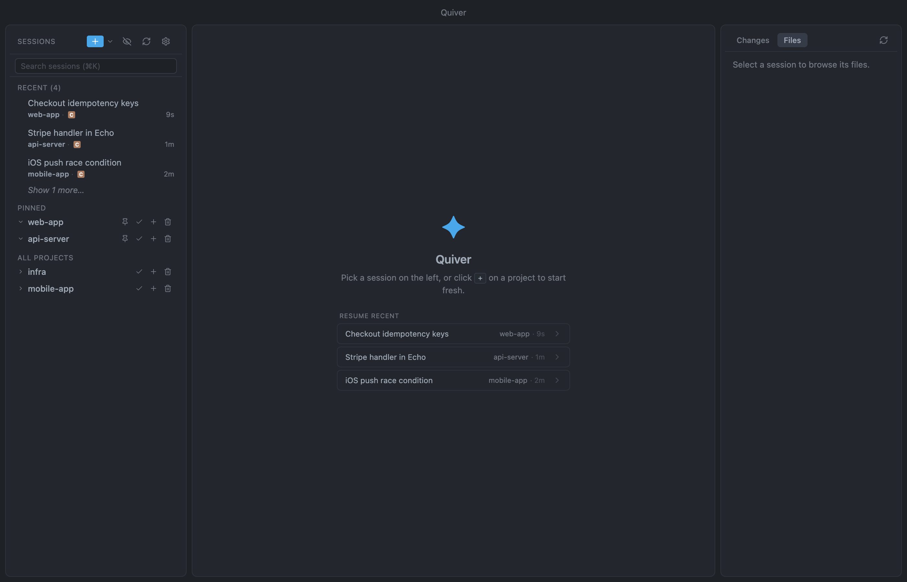
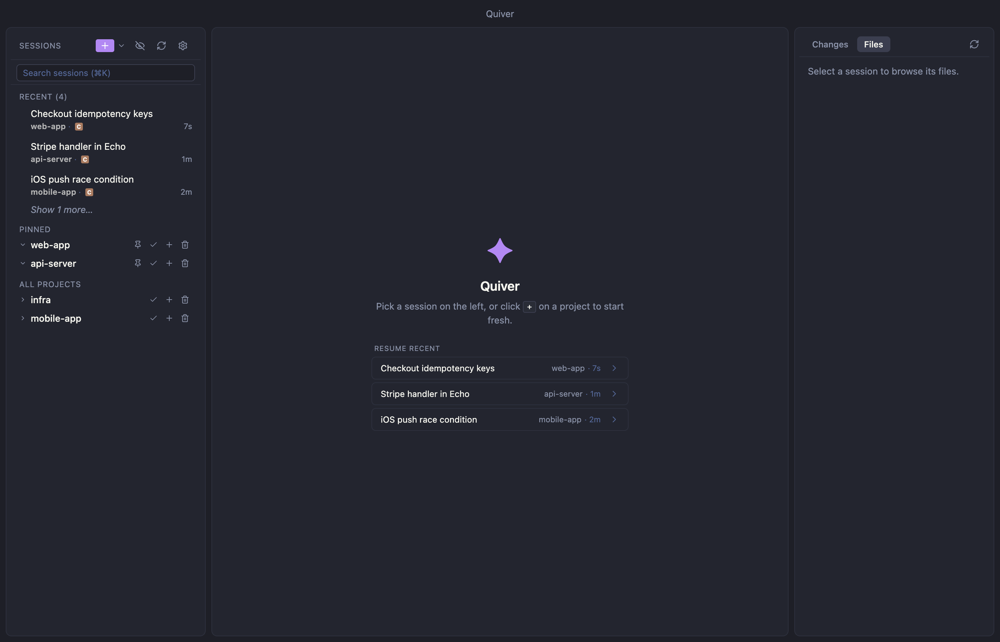

Stop juggling tmux tabs and terminal windows. Quiver gives every terminal coding agent — Claude Code, Codex, and more to come — a place, local or on a remote SSH host: pinned, searchable, with the real terminal, real diff, per-block staging, and a real shell in one frame.

The problem
You start a Claude session in checkout-api,
switch to a Codex session in storefront-web
to verify, end up with six terminal tabs, two iTerm windows, and
a tmux pane you forgot about. By Friday afternoon, you can’t
remember which session was on which branch — or which agent
you ran it in.
Wrapping a CLI in a chrome of buttons isn’t the answer — the CLI is the product. Quiver doesn’t re-implement Claude or Codex. It manages the windows around them: live, pinned, searchable, with everything you’d open alongside on the same surface.
What it does
Every session across every repo, grouped by project, status dot live. Pin the two you live in. Search across titles, prompts, and paths — whether they came from Claude or Codex.
Pick the agent when you start a session, per project. Claude C and Codex X sessions share the same sidebar, sort by recency, and resume in one click. More agents on the way.
A real PTY runs claude or
codex exactly the way you would from
your shell — full Nerd Font, oh-my-zsh themes, vim keys,
⌥ word-jump. Drop a zsh pane below with
⌃`, and split it into side-by-side
shells when one isn’t enough.
The right pane mirrors the active session’s working tree.
Switch to Changes for live git status
and open any file for a side-by-side diff — then
stage, unstage, or discard it one block
at a time, exactly like VS Code. The Files tree dims git-ignored
entries, and a worktree switcher follows the branch your agent built.
Pick a host from your ~/.ssh/config
(devpod included), browse its folders, and run Claude or Codex
there with its full terminal inside Quiver. Files, Changes, diffs,
and the bottom shell all work over the same multiplexed connection.
With tmux on the host, a dropped link
leaves your session alive — reconnect to the exact same screen.
Pick from built-in light and dark themes (Catppuccin included), or
import a VS Code color theme file — workbench
colors map to the app chrome, terminal.ansi*
to the terminal. Imported themes preview live and persist across
restarts.
In session
The OPENED list at the top of the sidebar tracks sessions you’re actively running. RECENT lets you pick up where you stopped last week without remembering which directory you were in — or which agent you started in.


No context switch
Quiver doesn’t replace your terminal — it absorbs
the one you keep next to the agent. Same shell, same path, same
dotfiles. git diff the change Claude or
Codex just made, run the test suite, answer the next prompt
without alt-tabbing. Need two? Split it into side-by-side panes.
On a remote project it opens on the host, in the same directory.
Local or remote
One + menu starts a session locally or
on any host in your ~/.ssh/config —
devpod included. The agent runs there, with its full
terminal, file tree, and git diffs streamed back over a single
multiplexed SSH connection.
tmux on the host, a dropped link
leaves the session — and its in-flight work — alive;
reconnect lands on the exact same screen.


Review before you commit
Read the diff of what your agent just wrote, then commit it on
your terms. Each contiguous change gets its own inline
Stage / Discard — keep the good hunk, drop
the stray edit, all without leaving the window. The file list
splits into Staged Changes and
Changes, just like VS Code, and every action maps
straight to git apply — what you
stage is exactly what git sees.
Make it yours
Built-in light and dark themes cover the chrome and the terminal in
one move. Or import a VS Code color theme file and
Quiver maps its workbench colors to the app and
terminal.ansi* to the terminal — the
palette you stare at all day, everywhere.


Get Quiver
Releases live in a public companion repo. Pick the architecture that matches your Mac.
Currently macOS only. Linux & Windows on the roadmap.